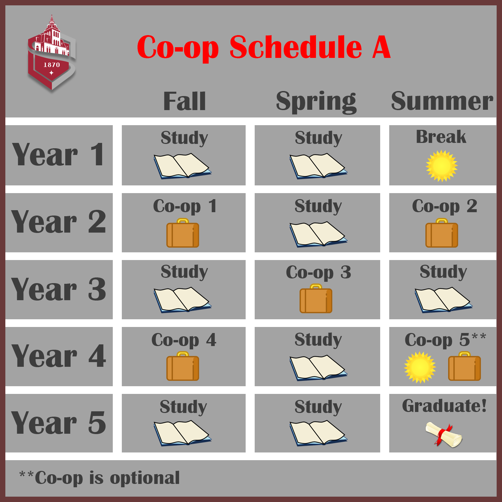
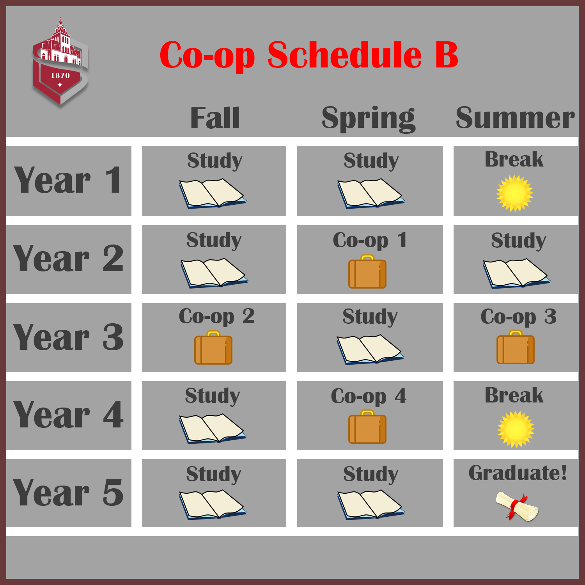

Scheduling
5-Year Schedule
While participating in the Co-op Program, your 4-year schedule at Stevens is replaced with a 5-year schedule. The time you spend at Stevens will be the same: 8 semesters of school. However, there will be additional semesters for your time at the workplace. There are two possible schedules for a Co-op Student:


Help Scheduling
There are plenty of resources for students who need help scheduling. The career center is always willing to help, with walk-in hours every day. Additionally, each department has a plan to facilitate co-op students in a 5-year plan.
For example, the Computer Science Department has an outline for both co-op students and normal students, which can be easily compared.